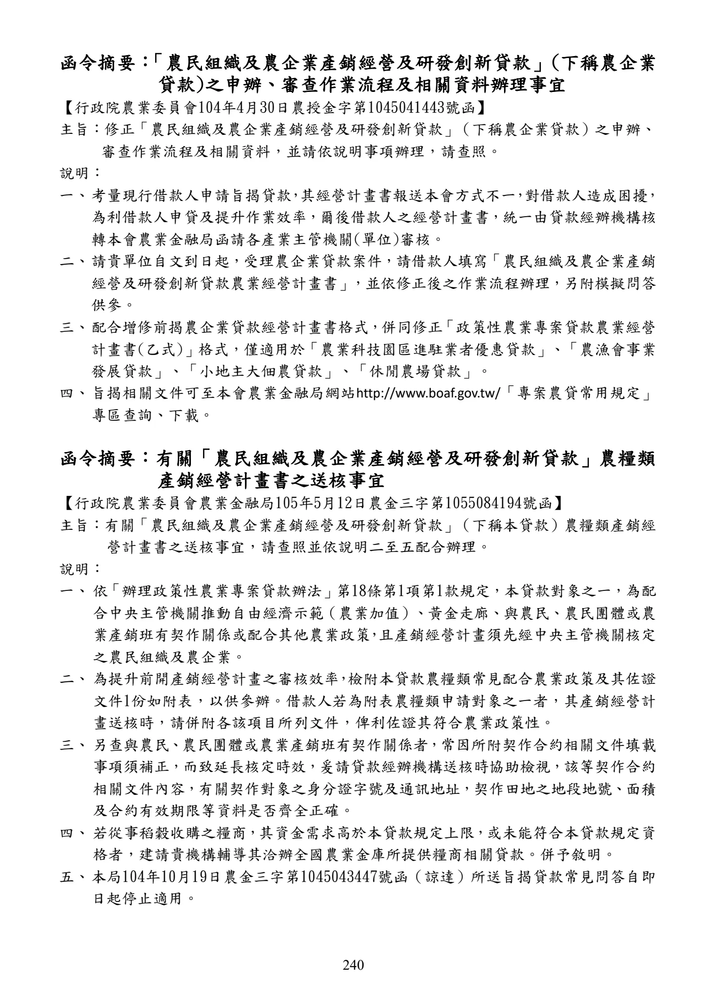

農民組織及農企業產銷經營及研發創新貸款
手冊頁：240 PDF頁：242／359
{kind=link}

展開查看PDF原始文字層
複雜表格欄列可能因文字層順序失真，請搭配原頁預覽查閱。
函令摘要：「農民組織及農企業產銷經營及研發創新貸款」 (下稱農企業 貸款)之申辦、審查作業流程及相關資料辦理事宜 【行政院農業委員會104年4月30日 農授金字第1045041443號函】 主旨：修正「農民組織及農企業產銷經營及研發創新貸款」 （下稱農企業貸款）之申辦、 審查作業流程及相關資料，並請依說明事項辦理，請查照。 說明： 一、 考量現行借款人申請旨揭貸款 ， 其經營計畫書報送本會方式不一 ， 對借款人造成困擾 ， 為利借款人申貸及提升作業效率，爾後借款人之經營計畫書，統一由貸款經辦機構核 轉本會農業金融局函請各產業主管機關(單位)審核。 二、 請貴單位自文到日起，受理農企業貸款案件，請借款人填寫 「農民組織及農企業產銷 經營及研發創新貸款農業經營計畫書」 ，並依修正後之作業流程辦理，另附模擬問答 供參。 三、 配合增修前揭農企業貸款經營計畫書格式，併同修正 「政策性農業專案貸款農業經營 計畫書(乙式)」格式，僅適用於「農業科技園區進駐業者優惠貸款」、「農漁會事業 發展貸款」、「小地主大佃農貸款」、「休閒農場貸款」。 四、 旨揭相關文件可至本會農業金融局網站 http://www.boaf.gov.tw/「專案農貸常用規定」 專區查詢、下載。 函令摘要：有關「農民組織及農企業產銷經營及研發創新貸款」農糧類 產銷經營計畫書之送核事宜 【行政院農業委員會農業金融局105年5月12日農金三字第1055084194號函】 主旨：有關「農民組織及農企業產銷經營及研發創新貸款」 （下稱本貸款）農糧類產銷經 營計畫書之送核事宜，請查照並依說明二至五配合辦理。 說明： 一、 依 「辦理政策性農業專案貸款辦法」 第18條第1項第1款規定，本貸款對象之一，為配 合中央主管機關推動自由經濟示範（農業加值） 、黃金走廊、與農民、農民團體或農 業產銷班有契作關係或配合其他農業政策 ， 且產銷經營計畫須先經中央主管機關核定 之農民組織及農企業。 二、 為提升前開產銷經營計畫之審核效率 ， 檢附本貸款農糧類常見配合農業政策及其佐證 文件1份如附表，以供參辦。借款人若為附表農糧類申請對象之一者，其產銷經營計 畫送核時，請併附各該項目所列文件，俾利佐證其符合農業政策性。 三、 另查與農民 、 農民團體或農業產銷班有契作關係者 ， 常因所附契作合約相關文件填載 事項須補正，而致延長核定時效，爰請貸款經辦機構送核時協助檢視，該等契作合約 相關文件內容，有關契作對象之身分證字號及通訊地址，契作田地之地段地號、面積 及合約有效期限等資料是否齊全正確。 四、 若從事稻穀收購之糧商 ， 其資金需求高於本貸款規定上限 ， 或未能符合本貸款規定資 格者，建請貴機構輔導其洽辦全國農業金庫所提供糧商相關貸款。併予敘明。 五、 本局104年10月19日農金三字第1045043447號函（諒達）所送旨揭貸款常見問答自即 日起停止適用。